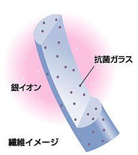
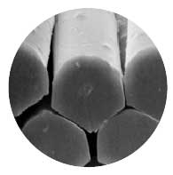
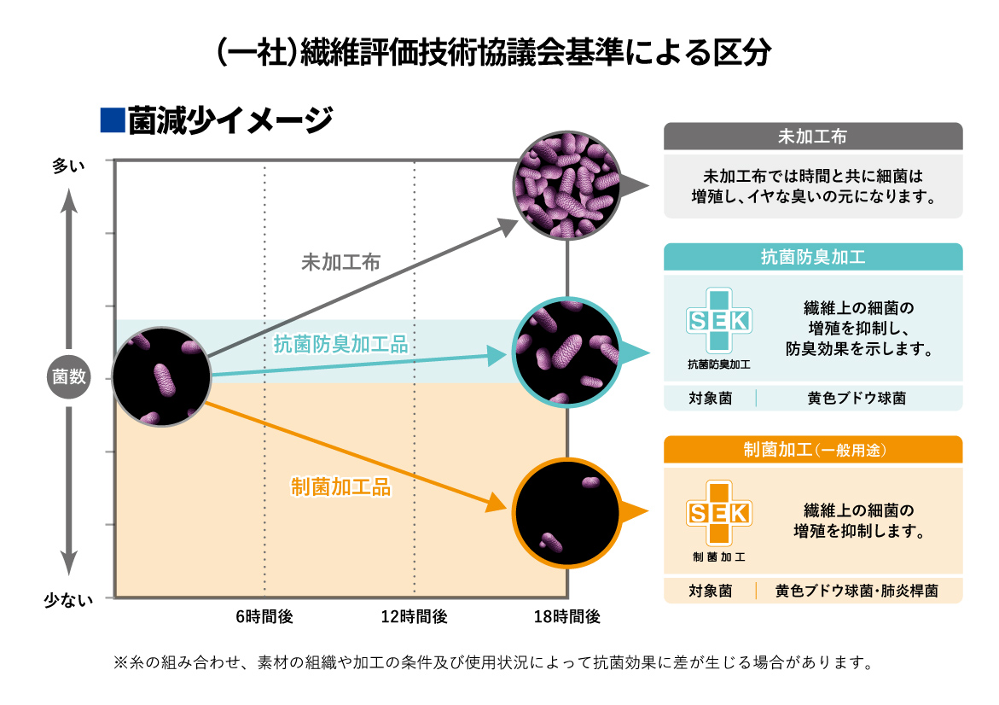

銀イオンの優れた抗菌効果が、 繊維上の細菌の増殖を抑制します。
高性能抗菌ガラスが、常に微量の銀イオンを放出。銀イオン自身がもつ効能により、細菌類に対し、優れた抗菌効果を発揮し、繊維上の細菌の増殖を抑制します。従来の後加工素材と比較すると、抗菌効果の持続性に優れています。


幅広い用途展開が可能です。
抗菌剤の練り込みによる糸質の変化を最小限におさえ、強度・伸度・収縮率などレギュラーポリエステル糸とほぼ同等の品質を保持します。清潔さが求められるスポーツウェア、ワーキングウェアをはじめ生活用品まで幅広い分野でご利用いただけます。
